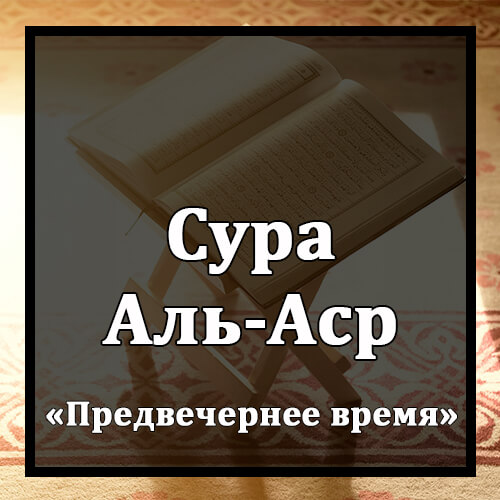

Бисмилляхир-Рахманир-Рахиим
Во имя Аллаха Милостивого и Милосердного!
Уаль-`Аср.
Клянусь предвечерним временем,
Инналь-Инсана Ляфи Хуср.
что люди несут убытки,
Илляль-Лязина Аману Уа `Амилюс-Салихати Уа Тауасау Биль-Хаккы Уа Тауасау Бис-Сабр.
кроме тех, которые уверовали, совершали праведные деяния, заповедали друг другу истину и заповедали друг другу терпение!